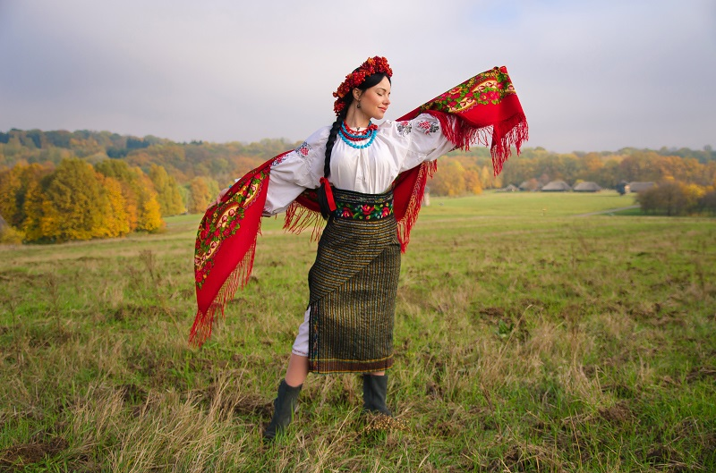

Українські відкриття, вишиванки та вареники: Що робить нас унікальними
Традиційне вбрання, вишивка та ткацтво
Українська вишивка, ткацтво використовуються в традиційному одязі народних і традиційних свят. Українська вишивка варіюється залежно від регіону її походження та конструкції,
яка має довгу історію, композицію, вибору кольорів і типу швів. Використання кольору дуже важливе і має певні історичні коріння в українському фольклорі. Національні українські
сукні багато прикрашені. Ткацтво ручної роботи, незважаючи на технологізацію виробництва, досі практикується, наприклад, у селі Крупове, що розташоване в Рівненській області.
Історія української науки

Наукові дослідження в Україні вперше почали набувати систематичного характеру в XVI—XVIII століттях, переважно у зв'язку зі створенням і розвитком Острозької академії,
Києво-Могилянської академії та Львівського університету, у яких приділяли увагу здебільшого гуманітарним наукам під панівним впливом релігії. До цього періоду належать
відомі українські мовознавці Лаврентій Зизаній, Памво Беринда, Мелетій Смотрицький, філософи Феофан Прокопович, Григорій Сковорода тощо.
Українська кухня
Українська кухня — національна кулінарія, яка має свою давню історію та славиться різноманітністю, нараховує сотні рецептів: борщі й пампушки, паляниці й галушки,
вареники й ковбаси, печені та напої з фруктів і меду, відомі далеко за межами України. Деякі страви мають багатовікову історію, як-от, наприклад, український борщ.
Багато особливостей української кухні були зумовлені способом життя народу, переважна більшість якого займалась важкою хліборобською працею. Важка праця потребувала ситної,
калорійної їжі. Тому для української кухні характерні страви багаті і на білки, і на жири, й на вуглеводи. Примхи ж національного характеру вимагали, аби ця їжа мала бути смачною.
Вас може зацікавити
- Географія та природа
- Рельєф
- Клімат
- Континентальний
- Морський
- Гірський
- Водойми
- Заповідні території
- Корисні копалини
- Козаччина